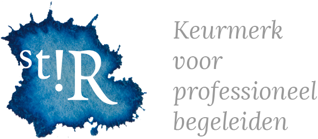

Coaching & Training
Professionele begeleiding voor iedereen in het onderwijs. Van individueel traject tot teamtraining — altijd op maat.



Geregistreerd en gecertificeerd voor professionele begeleiding in het onderwijs.
Individuele Coaching
Een persoonlijk traject volledig afgestemd op jouw situatie, doelen en tempo. Of je nu vastloopt, wil groeien of gewoon even wilt herijken — samen pakken we het aan.
Trajecten bestaan uit 5 tot 10 sessies van 60 à 90 minuten, online of op locatie in Maassluis.
- Intakegesprek om de coachvraag helder te maken
- Persoonlijk programma op basis van jouw behoeften
- Praktische tools en oefeningen voor dagelijks gebruik
- Ruimte voor reflectie en concrete stappen vooruit
- Flexibele planning — ook in de avonduren
Beeldcoaching
Soms zie je jezelf pas echt als je jezelf ziet. Bij beeldcoaching wordt een les of werksituatie gefilmd, waarna we de beelden samen bekijken en analyseren.
Een krachtige methode om blinde vlekken te ontdekken en je professioneel handelen te versterken.
- Opname van één of meerdere lessen / situaties
- Gezamenlijke analyse in een veilige omgeving
- Focus op sterke punten én groeikansen
- Gecertificeerde beeldcoach-methode
Trainingen op maat
Maatwerk sessies voor teams, secties of hele schoolorganisaties. Thema's zoals Human Dynamics, communicatiestijlen, werkdruk en teamdynamiek worden op een praktische en interactieve manier aangepakt.
- Human Dynamics & persoonlijkheidsprofielen
- Effectieve communicatie in de klas en het team
- Omgaan met werkdruk en energiemanagement
- Op aanvraag: specifieke thema's en wensen
Intervisie
Leren van en met collega's in een begeleide, veilige setting. Intervisie is een bewezen methode waarbij echte werkpraktijksituaties centraal staan.
Ik begeleid groepen van 4 tot 8 deelnemers door een gestructureerd reflectieproces.
- Vaste gespreksstructuur voor diepgang
- Inzichten die direct toepasbaar zijn
- Versterking van collegiale samenwerking
- Geschikt voor leerkrachten én leidinggevenden